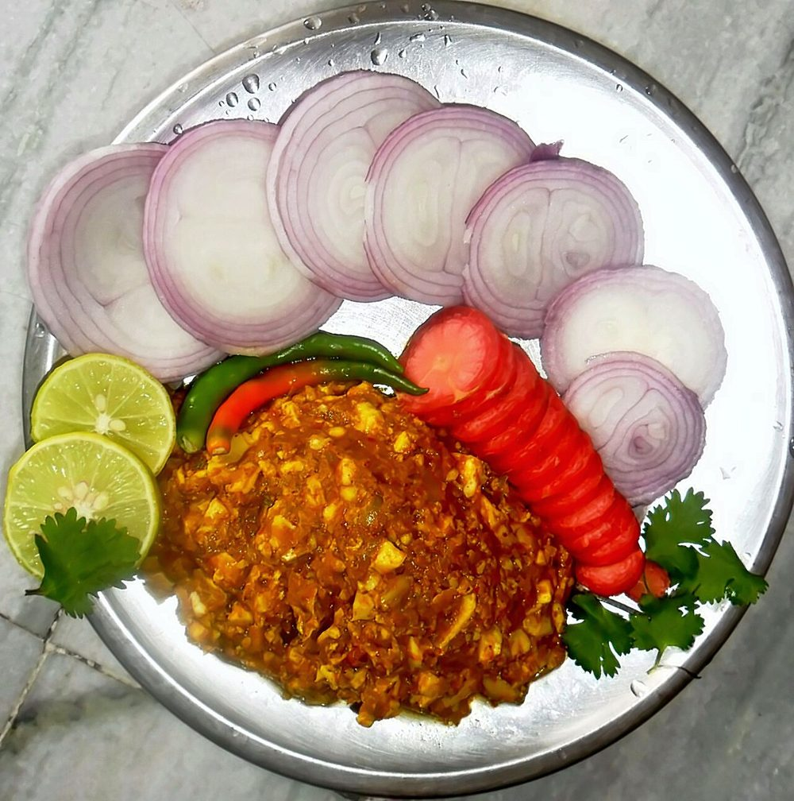

Contains: milk, egg
Checked against the ingredient list for ten allergens: milk, egg, fish, crustaceans, tree nuts, peanuts, sesame, mustard, soy and gluten. Brands vary, so read the label on anything new to you.
Ingredients
Quantities for 3.
- 500g, peeled and cut into thin matchsticks Potato
- 5, large Eggs
- 1 large, finely sliced Onion
- 3, finely chopped Green Chilli
- 1/2 cup, chopped Coriander Leaves
- 3/4 tsp Turmeric
- 1 tsp Cumin Powder
- 1/2 tsp Chilli Powder
- 1/2 tsp, freshly ground Black Pepper
- 3 tbsp Gheeneutral oil works, but ghee is the traditional fat
- to taste Salt
- 3 tbsp Water
Cookware
stovetop, kadhai
Before you start
- Cut the potato into fine even matchsticks. Thick pieces stay hard while the eggs overcook waiting for them.
- Rinse the cut potato and dry it well so it fries rather than steams.
- Use a wide pan you can cover, so all the eggs sit in a single layer on the potato.
Method
- Heat the ghee in a wide kadhai and fry the sliced onion 6 minutes until soft and lightly golden.
- Add the green chilli and cook 1 minute.
- Stir in the turmeric, cumin powder and chilli powder and fry 30 seconds.
- Add the potato matchsticks with 1 tsp salt and toss until every strand is coated yellow.
- Sprinkle over 3 tbsp water, cover, and cook 12 to 14 minutes on low, shaking the pan every few minutes.Shake rather than stir. Stirring breaks the potato into mash.
- Uncover and check. A matchstick should give completely under a spoon but the mass should still be loose, not sticky.
- Fold in half the coriander leaves, then flatten the potato into an even bed and make five shallow wells with the back of a spoon.
- Crack one egg into each well, season with salt and black pepper, cover, and cook on the lowest heat 6 to 8 minutes.Cover it. The steam is what sets the tops. Lift the lid at 6 minutes and check; the whites should be opaque and the yolks still liquid.
- Scatter the remaining coriander over and bring the pan straight to the table with pav or rotli.
Safe temperatures: Egg dishes are done at 71°C / 160°F; a whole egg when the yolk and white are both firm. Reheat leftovers to 74°C / 165°F. FoodSafety.gov
Storage
Best eaten straight from the pan. Leftover potato base keeps 2 days refrigerated and reheats well in a covered pan. Cook fresh eggs on it rather than reheating set ones.
Nutrition Good estimate
Medium protein: 15 g a serving, 15% of the calories
| Per serving322 g | Per 100 g | |
|---|---|---|
| Calories | 393 kcal | 123 kcal |
| Protein | 15.1 g | 5 g |
| Carbohydrate | 36.9 g | 12 g |
| of which sugars | 4.2 g | 1 g |
| Fibre | 5.1 g | 2 g |
| Fat | 21.3 g | 7 g |
| of which saturated | 10.7 g | 3 g |
| of which unsaturated | 9.2 g | 3 g |
Estimated from raw ingredients using USDA FoodData Central.
Times, yields, allergens and nutrition are guidance. Use your own judgement on doneness and on storing. More in About.